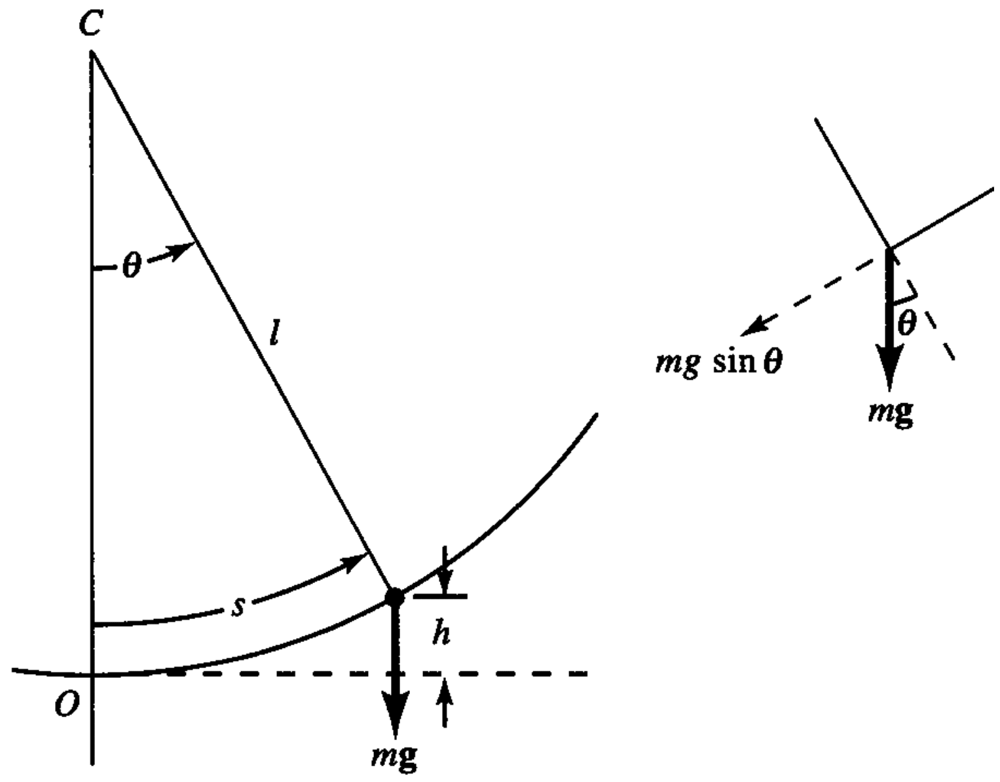

15. Oscillations#
In this unit, we will study systems whose motion displays characteristics which repeat in time - that is, they are periodic. We will also examine the physical processes through which periodic dynamics can arise.
15.1. Simple Harmonic Motion#
15.1.1. Harmonic Oscillator#
We start by considering the simple system of a mass \(m\) which is attached to one end of a horizontal spring, whose other end is fixed to a wall - see Figure \ref{fig:shmplot}. The equilibrium position of the mass is that position where the force on it is zero, which also corresponds to the position of minimum potential energy of the system, as we shall see.
For simplicity, we use a single coordinate \(x\) to describe the position of the mass, and take \(x=0\) for its equilibrium position. For positive displacements \(x>0\) the spring is stretched, and so will exert a negative restoring force on the mass which attempts to move it back towards equilibrium. Similarly, a compressed spring (\(x<0\)) exerts a positive restoring force. If this restoring force can be written as \(F = -kx\), where \(k\) is a positive constant, then the equation of horizontal motion becomes:
One possible solution of this equation is:
where \(A\) and \(\phi_0\) are constants, and the constant \(\omega_0\) is known as the angular frequency. In order to satisfy this equation, we require \(\omega_0=\sqrt{k/m}\). Sometimes we use the term “frequency” to refer to the reciprocal of the oscillation period, \(f_0=1/T_0\) (we can think of \(f_0\) as representing the number of cycles of oscillation per unit time).
The displacement of the mass at time zero is \(x_0 = A\,\sin\phi_0\). The motion repeats itself after the argument of the sine function increases by \(2\pi\); that is, the period of the motion \(T_0\) satisfies \(\omega_0\,(t+T_0) = \omega_0\,t + 2\pi\). Hence \(T_0 = 2\pi/\omega_0\) and so the period of the motion depends on the constant \(k\), which describes the “stiffness” of the spring, and the mass \(m\). The amplitude of the motion \(A\) describes the fact that the motion is bounded, i.e., \(x\) varies between values of \(-A\) and \(A\). Figure \ref{fig:xvsomtplot} illustrates the behaviour of \(x\) as a function of \(\omega_0\,t\), emphasising the periodic property of the motion.
We also note that the maximum value of the displacement \(x_m\) occurs at times \(t_m\) when the argument of the sine function is \(\pi/2 + 2n\pi\), for any integer \(n\). Thus \(\omega_0\,t_m = (\pi/2 - \phi_0) + 2n\pi\).
In general, if we specify the values at time zero of displacement, \(x_0\), and velocity, \(v_0\), we must have:
from which we obtain \(\tan\phi_0 = \omega_0 x_0 / v_0\). Note that if the mass is released from rest at time zero (\(v_0 = 0\)) from some non-zero positive displacement \(x_0\), then \(\phi_0 = \pi/2\) and so \(x_0\) will be the maximum positive displacement, which will re-occur during the motion with the period \(T_0\).
Note that these equations can also be used to show that the amplitude of the motion must satisfy \(A^2 = x_0^2 + v_0^2/\omega_0^2\).
15.1.2. Simple Harmonic Motion: Rotating Vector Representation#
Consider Figure \ref{fig:rotvecplot}, which shows the rotating position vector \(\vec{A}\) of a point P which executes circular motion with a uniform speed. The angle made by this vector with the \(x\) axis is \(\theta = \theta_0 + \omega_0\,t\). The \(x\) coordinate of P, for the given geometry, will therefore be \(x=A\,\cos(\omega_0\,t+\theta_0)\).
We could also use the angle \(\phi = \phi_0+\omega_0\,t\) made with the \(y\) axis to describe this motion, and note that \(x = A\sin\phi = A\,\sin(\omega_0\,t+\phi_0)\). Whichever choice we make, we observe that the value of \(x\) (the projection of the vector onto the \(x\) axis) oscillates according to simple harmonic motion as the rotation of P proceeds. This suggests that a linear combination of sine and cosine functions could be used to represent the general solution for simple harmonic motion.
15.1.3. Harmonic Oscillator with Constant External Force#
In the last section, we considered harmonic motion in the horizontal direction, where the only force on the moving mass was that due to the spring being stretched or compressed. The character of the motion changes in interesting ways if we add an external force to the system. As a simple example, we consider (see Figure \ref{fig:shmvert}) a mass on a mounted spring which can only move in the vertical direction, and we include the effects of the vertical downward acceleration, \(g\), due to gravity.
We obtain the following equation of motion by adding a gravitational term to an equation similar to the “spring equation” from the last section. We also use here a non-zero quantity \(X_e\) to represent the unperturbed length of the spring. We take the convention of the mass position \(X\) being positive downwards for this example:
We note that the new equilibrium position of the mass, where there is zero total force on it, is the value of \(x\) for which the right side of the above equation is zero. This value is \(X_e' = mg/k + X_e\). It is convenient to rewrite the equation of motion now in terms of the displacement relative to the equilibrium location, \(x = X-X_e'\):
This is an important result. Any constant external force does not change harmonic motion, provided we measure displacement from the shifted equilibrium position which is introduced by that force.
15.1.3.1. Simple Pendulum#
The simple pendulum consists of a plumb bob of mass \(m\) attached to the end of a light string of fixed length \(l\), whose other end is mounted at a fixed point (see Figure \ref{fig:pendulum}). The position can be described by the angle \(\theta\) or equivalently the arc length \(s = l\,\theta\). The component of the gravitational force on the bob along its direction of motion is \(F = -m\,g\,\sin\theta\) (with \(g>0\)). Even though the bob moves in a curved path, its equation of motion is one-dimensional:
We can now make the assumption that the amplitude of the swinging bob is small, such that \(\sin\theta\approx\theta\). Hence:
This now has the same form as the harmonic motion equations we have encountered previously. Provided the small-amplitude approximation is valid, the pendulum motion is periodic, with angular frequency \(\omega_0=\sqrt{g/l}\) and period \(T_0 = 2\pi\,\sqrt{l/g}\). Using these expressions, we find, for example, that a small-amplitude pendulum moving at sea level, at latitude \(45^{\circ}\), where \(g=9.8062\,\mathrm{m\cdot s^{-2}}\), will have a period of \(2\,\mathrm{s}\) if it is of length \(0.9936\,\mathrm{m}\).

15.1.3.2. Simple Harmonic Motion: Energy#
If we recall the form of restoring force for the simple harmonic oscillator from section \ref{sec:shmo}, \(F=-k\,x\), where \(x\) is the displacement from equilibrium of the oscillating mass, we observe that this same force can be expressed as \(F=-\dfrac{dV}{dx}\), where the function \(V=\frac{1}{2}kx^2\) can be identified as the potential energy of the system. If, for example, we apply an external force \(F_{ext}\) to the mass, equal and opposite to the force exerted by the spring, we could move it from equilibrium \(x=0\) to some final displacement \(x=x_f\). The work we need to do in order to achieve this is
Hence, the physical meaning of the potential energy is the work which needs to be done in order to compress or expand the spring by a certain amount. In a sense, it represents energy “stored” in the spring.
As well as being able to calculate the potential energy \(V\) of the system, we can also determine the kinetic energy of the oscillating mass according to \(K = \frac{1}{2} m \dot{x}^2\). The total energy is therefore:
If there are no losses in energy during motion (due to e.g., heating, friction) then \(E\) is a constant of the motion, and we can rearrange to solve for \(\dot{x}\):
The different choice of sign indicates that the mass will have the same magnitude of velocity at those two points during the motion when it is at equal but opposite displacements with respect to the equilibrium point \(x=0\). We can now integrate the above equation to find:
Here, \(C\) is a constant of integration and \(A = \sqrt{2E/k}\).
We also note from equation \ref{eq:shmE} that, at times when \(\dot{x}=0\) and the mass is changing direction, it must be at the extreme points of its displacement. We see from this equation that \(x=\pm\sqrt{2E/k}\) when \(\dot{x}=0\), and thus \(A\) can be identified as the amplitude of the motion.
Equation \ref{eq:shmE} also shows us that the maximum speed of the mass occurs when \(x=0\) and is given by \(|\dot{x}|_{max} = \sqrt{2E/m} =\sqrt{k/m}\,A\). The total energy is conserved during the motion, but is continually converted between kinetic and potential energy. All of the energy is kinetic when \(x=0,\dot{x} = \pm\sqrt{k/m}\,A\) and all potential when \(x=\pm A, \dot{x}=0\).
We can apply these same energy-related concepts to the case of the simple pendulum from section \ref{sec:pendulum}. In this case, the potential energy of the pendulum bob can be written as \(V = mgh\), where \(h\) is its vertical displacement with respect to some reference level of zero potential, which we can conveniently choose to be the equilibrium point corresponding to \(s = \theta = 0\).
We see from the geometry of Figure \ref{fig:pendulum} that \(h=l - l\,\cos\theta\). For small \(\theta\), a second-order accurate form for the function \(\cos\theta\) is \(1-\frac{1}{2}\,\theta^2\). The corresponding approximate potential energy is \(V(\theta) = \frac{1}{2}\,mgl\,\theta^2\), or \(V(s) = \frac{1}{2}\,mg\,s^2/l\). Total energy can thus be written as:
15.1.4. Damped Harmonic Motion#
In this section, we explore solutions for the motion of a mass moving on the end of a spring, with the inclusion of a viscous retarding force, which is a linear function of velocity. We can write this as \( F_v = -c \dot{x} \), where \( c \) is a positive constant, and \( x \) again denotes displacement from the equilibrium position. The modified equation of motion is:
This is a second-order, linear differential equation with constant coefficients. Its general solution is of the form:
Here, the \( A_i \) are constants, and the \( \lambda_i \) are the two roots of the quadratic equation which corresponds to the form of the differential equation itself:
Hence, we can define:
where \( \gamma = c / (2m) \) and \( \omega_0 = \sqrt{k/m} \) is the angular frequency of the simple harmonic case without the retarding force.
The physical description of the motion falls into three cases, according to the value of the parameter \( q = \sqrt{\gamma^2 - \omega_0^2} \). We now consider these three cases, which are: overdamping (\( q \) real and positive); critical damping (\( q = 0 \)); and underdamping (\( q \) imaginary).
15.1.4.1. Overdamping#
For this case, both terms in the general solution become decaying exponential functions with decay time constants equal to \( \tau_1 = 1 / (\gamma - q) \) and \( \tau_2 = 1 / (\gamma + q) \). The coefficients \( A_i \) will depend on the initial conditions of the problem. In general, the mass, initially displaced and then released from rest, will gradually return to the equilibrium position but will not exhibit oscillation due to the strong damping force (see Figure \ref{fig:ovcritdamp}).
15.1.4.2. Critical Damping#
In this case, the values of both \( \lambda_1 \) and \( \lambda_2 \) become equal to \( -\gamma \). So, to find two independent solutions, we return to the original differential equation and use \( \omega_0^2 = \gamma^2 \):
If we define the function \( u = (\dot{x} + \gamma x) \), we find that the solution for \( u \), according to this form of the equation, is \( u = A \exp(-\gamma t) \), where \( A \) is a constant. Hence:
Here, \( B \) is another constant of integration. The two distinct terms are a decaying exponential modulated by a function linear in time and a decaying exponential. Again, the motion is non-oscillatory and returns to equilibrium asymptotically (see Figure \ref{fig:ovcritdamp}).
15.1.4.3. Underdamping#
Physically, the retarding force in this case is weak enough that it does not suppress oscillatory behavior entirely. Let us quantify this behavior by exploring the nature of the solution for \( x \) when \( q \) is imaginary.
Let us define \( q = i\omega_d \), where \( \omega_d = \sqrt{k/m - c^2 / (4m^2)} \) is positive and real, and, as we shall see, is associated with the oscillatory part of the solution. Note that \( \omega_d = \sqrt{\omega_0^2 - \gamma^2} \), which tells us that the frequency \( \omega_d \) of our damped oscillator is not the same as the frequency \( \omega_0 \) for undamped motion.
Let’s now rewrite the general solution in terms of \( \gamma \) and \( \omega_d \):
To ensure \( x(t) \) is real-valued, we require that:
Representing \( C \) as \( \frac{A}{2} \exp(-i\theta_0) \), where \( A \) and \( \theta_0 \) are real-valued, the solution becomes:
or, using \( \cos\theta = \frac{1}{2} (e^{i\theta} + e^{-i\theta}) \):
We note that the presence of the real factor \( \exp(-\gamma t) \) produces an exponential decay of the oscillation amplitude with time. The underdamped oscillator has a frequency smaller than the undamped one.
15.1.5. Forced Harmonic Motion and Resonance#
In this section, we extend our study of harmonic motion to investigate the interesting dynamical effects of adding an external force to the oscillator problem. We will consider a periodic external force of a frequency which is generally different from the “natural” frequency of the oscillator (which we have studied in the preceding sections). We will determine how the nature of the motion is affected by how similar or different the frequencies of the driving force and the natural oscillation in the absence of this driving are.
We will start by considering the general problem of an oscillator subject to both damping and the driving influence of the external force. We will see that the general solution is a superposition of oscillations at different frequencies and that the amplitude of the oscillations depends on how close the natural and the driving frequencies are.
To make the mathematics more tractable, we will represent oscillating functions in time as complex-valued. For example, the complex function \( e^{i\omega t} \) implicitly represents a periodically varying physical quantity represented by its real part: \( \Re(e^{i\omega t}) = \cos(\omega t) \).
We now write the equation of motion:
The terms on the right-hand side are, respectively, the restoring force (e.g., from a spring), the damping term proportional to velocity, and the external force of amplitude \( F_0 \) and angular frequency \( \omega \). As before, we take \( \omega_0 = \sqrt{k/m} \) to be the natural frequency, which would arise in the absence of any damping or driving. Using this definition, we can rewrite the equation of motion as:
where \( \gamma = c/(2m) \).
The general solution consists of two parts: the homogeneous solution (in the absence of a driving force) and a particular solution.
The homogeneous solution is of the form:
where the \( \alpha \) values are the roots of the corresponding quadratic equation \( \lambda^2 + 2\gamma\,\lambda + \omega_0^2 = 0 \), given by:
To find a particular solution, we try \( x_p(t) = A e^{i\omega t} \) and solve for \( A \):
yielding
To ensure a real-valued amplitude, we can convert this complex number into polar form, where
With algebra, we can show that \( A_{dr} = \dfrac{F_0/m}{\sqrt{(\omega_0^2 - \omega^2)^2 + 4\gamma^2 \omega^2}} \) and
Thus, the particular solution can be written as:
The homogeneous solution decays as \( e^{-\gamma t} \). Physically, this means that for times \( t >> (1/\gamma) \), the homogeneous solution decays away, leaving the steady-state solution as:
This steady-state behavior has two important aspects: (1) the response of the oscillating mass lags the driving force by phase \( \phi_{dr} \); and (2) the amplitude of the position depends on the driving frequency. This leads to the phenomenon of resonance, where the amplitude maximizes when the driving frequency is close to the natural frequency.
15.1.5.1. Amplitude of the Motion#
The real-valued amplitude of the steady-state motion is given by:
The maximum amplitude occurs at the resonant frequency:
As \( \gamma \rightarrow 0 \), \( \omega_r \rightarrow \omega_0 \). For strong damping \( \gamma > \sqrt{2}\,\omega_0 \), there is no local maximum, and the amplitude decreases monotonically with the driving frequency \( \omega \).
For weak damping \( \gamma << \omega_0 \), the maximum amplitude approximates
In practical applications, resonance may be avoided to prevent large oscillations. Damping can be implemented in systems, such as stiff rubber mountings in electric motors, to ensure that resonant frequency is far from the operating frequency.
15.1.5.3. Phase Difference#
Now, let’s examine the phase difference between the damped, driven oscillator and the external driving force, which determines the steady-state response:
Figure 2: Steady-state phase difference of the damped, driven oscillator
In Figure \ref{fig:phiplot}, the phase difference undergoes a \( \pi \) shift as the driving frequency crosses the resonant frequency, with a sharper change for smaller values of \( \gamma / \omega_0 \). When \( \omega << \omega_0 \), \( \phi_{dr} \rightarrow 0 \), and the driving force and response are in phase, with the mass moving slowly under the external force.
At resonance, the response amplitude can be significant. The ratio of the maximum amplitude to the amplitude in the low-frequency limit is \( A_{max} / A(\omega \rightarrow 0) = \frac{\omega_0^2}{2 \gamma \sqrt{\omega_0^2 - \gamma^2}} \). For \( \gamma << \omega_0 \), this approaches the quality factor \( \omega_0 / (2 \gamma) \).
At \( \omega = \omega_0 \), \( \phi_{dr} = \pi/2 \), meaning the oscillator lags a quarter cycle behind the driving force. For high frequencies \( \omega >> \omega_0 \), the phase difference reaches \( \pi \), and the amplitude decreases to \( F_0 / (m \omega^2) \). Here, the high-frequency driving force causes the mass to behave as if it is free, with the spring imposing an antiphase relation between the driving force and the oscillator’s response.